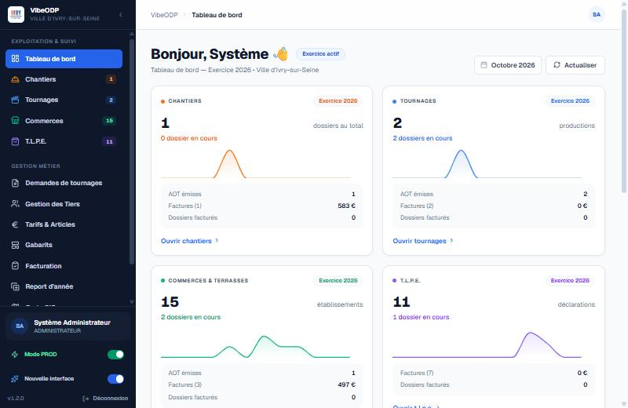
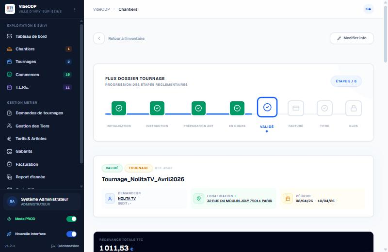
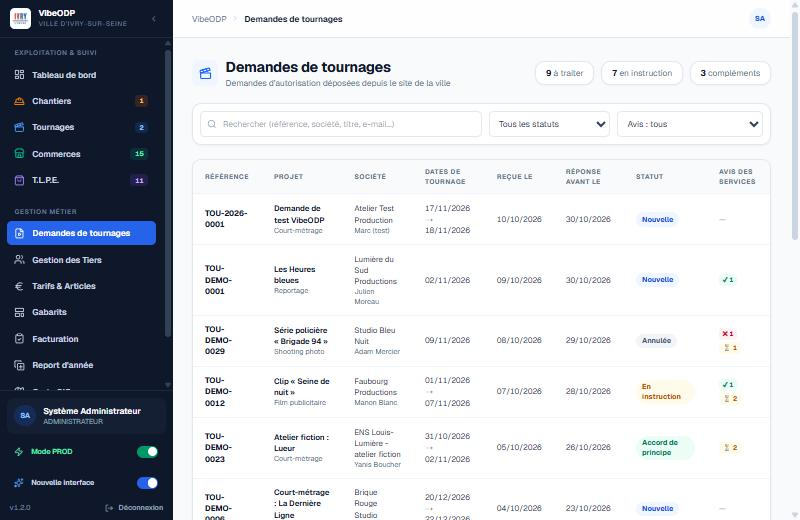
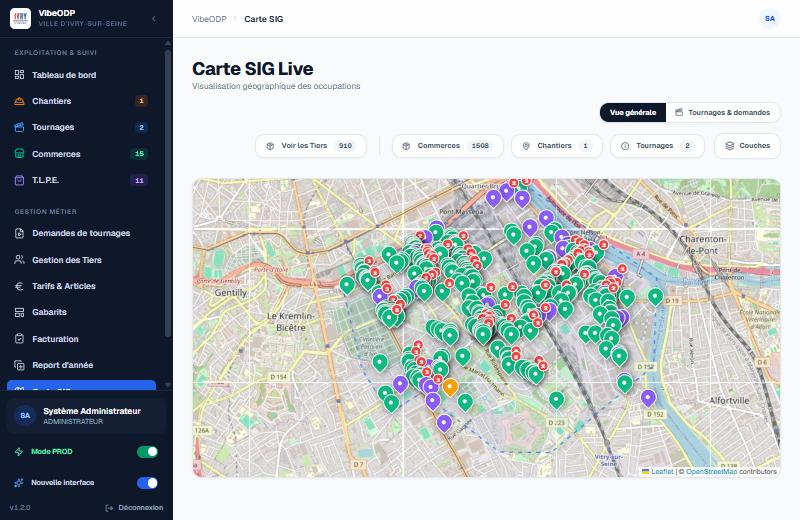
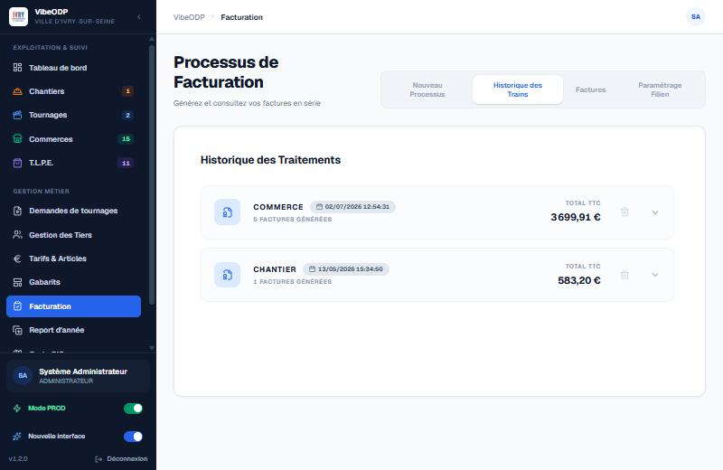
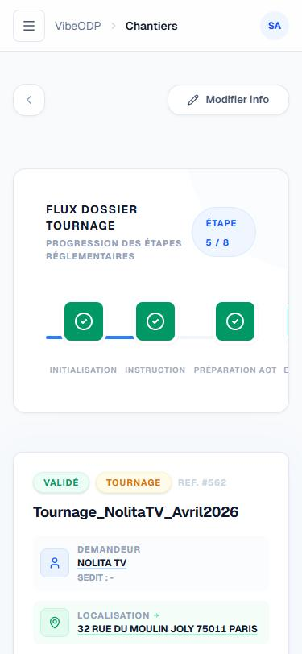

Les redevances et la publicité extérieure, de la demande de place au titre de recette.
VibeODP gère l'occupation du domaine public : chantiers, tournages, commerces, terrasses, enseignes — instruction du dossier, autorisation, calcul de la redevance RODP ou de la taxe locale sur la publicité extérieure, facturation FILIEN vers SEDIT et carte SIG. Conçu avec le service qui instruit, pas vendu à distance.

Le logiciel s'adapte au service, pas l'inverse.
Instruire une occupation du domaine public, c'est faire tenir ensemble des métiers qui n'ont ni les mêmes règles ni les mêmes délais : un chantier, un tournage, une terrasse de commerce, une enseigne publicitaire. Chacun a son dossier, son barème et son autorisation. VibeODP part de cette réalité — le guichet, l'instructeur, le contrôleur terrain, la régie — et calcule la redevance ou la taxe comme le service la calcule, sans figer les règles dans le code.
Un dossier, tout son cycle de vie
Demande, instruction, autorisation, facturation, reconduction, report d'année : chaque occupation suit ses statuts dans un seul dossier, avec ses pièces et son historique.
Chantiers, tournages, commerces
Un même outil pour toutes les occupations du domaine public, avec les particularités de chaque famille — contraintes de voirie, délais de tournage, emprises commerciales.
Redevances calculées automatiquement
Barèmes RODP (centre / périphérie), surfaces, durées, prorata et abattements : le calcul suit les délibérations tarifaires et se vérifie ligne à ligne.
TLPE intégrée
Taxe locale sur la publicité extérieure : enseignes, supports, surfaces, dispositifs, abattements PME — calculée et reprise avec les tarifs votés, sans tableur parallèle.
Tiers et redevables
Création et recherche des tiers, rattachement des occupations, RIB et historique : le demandeur et le redevable restent liés au dossier, pas perdus dans un carnet d'adresses.
AOT et autorisations
Autorisations d'occupation temporaire générées à partir de gabarits Word, converties en PDF, envoyées à la signature électronique et suivies jusqu'à l'état signé.
Facturation en lot et FILIEN
Préparation et contrôle des titres du mois, génération du fichier FILIEN destiné à SEDIT, confirmation des titres et report d'année gérés par le service.
Carte SIG des occupations
Chaque dossier se situe sur une carte : emprises, rues, quartiers. Le service voit d'un coup d'œil où le domaine public est occupé, et pour quoi.
Terrain et notifications
Contrôle sur le terrain depuis un téléphone ou une tablette (photos, relevés), messages contextuels et relances paramétrables selon l'état du dossier.
Ce que VibeODP fait, qu'un tableur ne fera jamais.
Toutes les occupations dans un dossier-type, pas des fichiers par métier
Un chantier, un tournage, une terrasse ou une enseigne se suivent de la même façon : demande, instruction, pièces, autorisation, facturation. Chaque famille garde ses règles, mais le service n'a plus à jongler entre un tableur « chantiers », un tableur « tournages » et des dossiers papier.
- Statuts, pièces et autorisations homogènes pour toutes les familles
- Échéances et reconductions suivies dossier par dossier
- Un numéro, un redevable et un historique par occupation

De la demande de tournage à l'autorisation signée
Une demande de tournage arrive, se rattache à un tiers, se contrôle au regard des contraintes de voirie et de la période, puis donne lieu à une autorisation générée, mise en signature et conservée dans le dossier. Le demandeur et l'instruction ne s'échangent plus des pièces jointes par mail.
- Demande en ligne rattachée au tiers et au dossier
- Autorisation produite depuis un gabarit, signée électroniquement
- État de signature et documents consultables depuis le dossier

La redevance calculée, la carte pour la situer
Le barème appliqué, la surface, la durée et le prorata donnent une redevance ou une taxe calculée automatiquement, sans recalcul manuel en fin de mois. Et comme chaque occupation est localisée, la carte montre immédiatement où le domaine public est occupé — utile pour arbitrer autant que pour contrôler.
- Barèmes RODP et TLPE ajustables sans modification du code
- Calcul détaillé, vérifiable et conservé avec le dossier
- Carte SIG des occupations, avec emprises et quartiers

Facturée en lot, poussée vers SEDIT
En fin de période, le service prépare les titres en lot, les contrôle, puis produit le fichier FILIEN attendu par SEDIT — avec ses imputations, ses montants et ses pièces justificatives. Les titres confirmés et les encaissements se suivent ensuite dans le logiciel financier.
- Préparation, contrôle et génération FILIEN en un enchaînement
- Confirmation des titres et report d'année pris en charge
- Un même dossier, de la place occupée au titre de recette

Un dossier, mais un écosystème complet autour.
VibeODP ne travaille pas seul : il se branche sur l'annuaire, la messagerie, le logiciel financier et les outils de la collectivité, sans jamais ressaisir une donnée.
Annuaire, mails et SMS via l'APM
Authentification par l'Active Directory, recherche des agents et des élus, envoi de mails et de SMS, création de tiers : l'outil réutilise les services de la collectivité plutôt que d'imposer les siens.
Facturation vers SEDIT / FILIEN
La facturation en lot produit le fichier FILIEN attendu par SEDIT, avec ses imputations et ses pièces justificatives, puis relit la confirmation des titres — les deux logiciels partagent la même chaîne financière.
Signature électronique
Les AOT et autorisations générées depuis des gabarits partent en signature électronique, avec le suivi de l'état (à signer, signé, refusé) et le document signé conservé dans le dossier.
Carte et fonds de plan
Les occupations se situent sur une carte interactive : emprises, rues, quartiers. Le service arbitre et contrôle à partir du terrain réel, pas d'une liste d'adresses.
Demande publique et avis en ligne
Une interface publique recueille les demandes (tournages, occupations) et les avis, isolée du système interne, puis reverse chaque demande dans le dossier correspondant.
Tarifs et délibérations importés
Les tarifs RODP et TLPE s'importent et se paramètrent depuis les tableaux du service ; un changement de délibération se traduit sans toucher au code.
Le contrôle terrain dans la poche de l'agent
L'agent en tournée ouvre un dossier depuis son téléphone ou sa tablette : il vérifie l'emprise, relève ce qu'il constate, prend des photos et complète le dossier sur place. L'information remonte quand elle est fraîche, pas le soir au bureau.
- Dossier et emprise consultables sur le terrain
- Relevés et photos rattachés à l'occupation
- Contrôle tracé, avec son auteur et sa date

Une stack ouverte, dockerisée, pensée pour durer.
Les choix techniques ne sont pas neutres : ce sont eux qui décident si une collectivité reste maîtresse de son outil dans dix ans. VibeODP s'appuie sur ce qui se fait de mieux en logiciel ouvert, et sur des briques mobiles et cartographiques éprouvées.
Next.js, React, TypeScript
Le framework web le plus répandu et le mieux outillé du moment : un grand vivier de compétences pour reprendre la maintenance, et un typage strict qui élimine des classes entières de bugs avant l'exécution.
PostgreSQL, sans licence
La base de données open source la plus aboutie du marché — recherche plein texte, JSON natif, extensions — sans coût de licence, sans audit de conformité et sans hausse tarifaire décidée par un éditeur.
Dockerisé de bout en bout
L'application se déploie avec Docker Compose, à l'identique en test et en production : installer une instance ou migrer vers un autre serveur tient en une commande, pas en un projet.
Une vraie application terrain
Le contrôle se fait depuis une application mobile installable, pensée pour être utilisée debout, dehors, avec l'appareil photo et sans dépendre d'un poste de bureau.
Cartographie éprouvée
La carte s'appuie sur des bibliothèques cartographiques open source et des fonds de plan ouverts : aucune dépendance à un service de cartographie propriétaire.
Aucun fournisseur incontournable
Authentification, messagerie, signature, facturation, carte : chaque brique externe se branche par une interface standard et se remplace sans toucher au reste du code — l'inverse d'un logiciel qui impose son fournisseur.
Fait par des territoriaux, pour des territoriaux.
VibeODP n'a pas été conçu dans les bureaux d'un éditeur puis vendu à des communes qui doivent ensuite s'y plier. Il a été écrit dans une direction des systèmes d'information de collectivité, avec le service qui instruit réellement les occupations du domaine public — celui qui connaît les barèmes, les tournages de dernière minute, les emprises contestées et les recours qu'aucune fiche produit ne prévoit.
Ce n'est pas un jugement sur les éditeurs : certains font bien leur métier. C'est une conviction simple — les outils du quotidien des services publics gagnent à être conçus avec les agents qui les utilisent, pas seulement livrés à distance selon une feuille de route qu'ils ne voient jamais.
Co-construit avec le service
Chaque écran est né d'un besoin réel du service qui instruit les occupations et de la régie, pas d'une maquette générique.
Des règles métier paramétrables
Barèmes RODP, tarifs TLPE, abattements et statuts se règlent par le service, sans développement, et suivent les délibérations.
Construit avec l'IA, sous supervision humaine
Tests, revue de code et traçabilité comme sur tout développement sérieux — l'intelligence artificielle accélère l'écriture, elle ne remplace pas le contrôle.
Gratuit. Aucun abonnement, aucune licence, aucun coût par fonctionnalité. VibeODP est né d'un besoin de collectivité, pas d'un modèle commercial à rentabiliser — il se partage comme il a été construit.
Nous écrireEnvie de VibeODP dans votre collectivité ?
Écrivez-nous : nous en parlons volontiers, montrons l'outil et regardons ensemble ce qu'il faudrait adapter à vos barèmes et à votre organisation.
Pas de dépôt de code public pour l'instant — passez par ce contact plutôt que par un lien de dépôt.